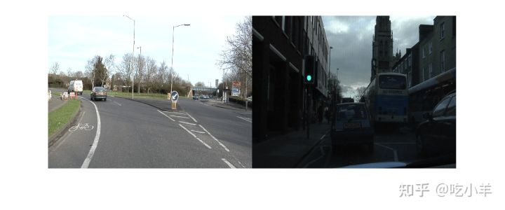
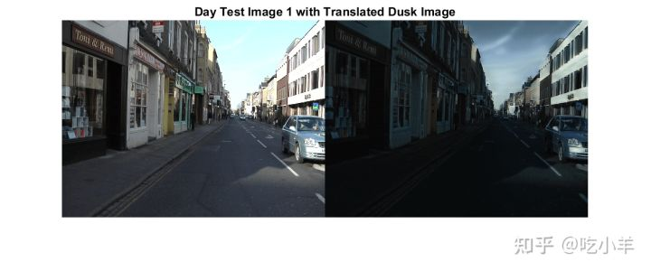
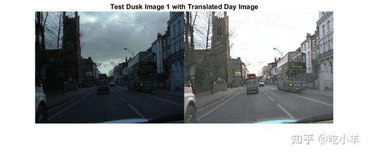

Home
本示例说明如何使用无监督的图像到图像转换网络 (UNIT，UNsupervised Image-to-image Translation) 在白天和黄昏条件下获取的图像之间执行域转换。
域转换是将图像的样式和特征，从一个图像域转移到另一个图像域的任务。该技术可以扩展到其他图像到图像学习操作，例如图像增强、图像着色、缺陷生成和医学图像分析。
UNIT [1]是一种生成对抗网络 (GAN)，它由一个生成器网络和两个鉴别器网络组成，您可以同时训练它们以最大化整体性能。
下载数据集
本示例使用剑桥大学的 CamVid 数据集 [2]进行训练。该数据集是 701 张图像的集合，其中包含驾驶时获得的街道视图。
从此 URL 下载 CamVid 数据集。下载时间取决于您的互联网连接。
imageURL = 'http://web4.cs.ucl.ac.uk/staff/g.brostow/MotionSegRecData/files/701_StillsRaw_full.zip'; dataDir = fullfile(tempdir,'CamVid'); downloadCamVidImageData(dataDir,imageURL); imgDir = fullfile(dataDir,"images","701_StillsRaw_full");
加载白天和黄昏数据
CamVid 图像数据集包括白天采集的 497 幅图像和黄昏采集的 124 幅图像。训练后的 UNIT 网络的性能有限，因为 CamVid 训练图像的数量相对较少，这限制了训练后网络的性能。此外，一些图像属于图像序列，因此与数据集中的其他图像相关。为了最小化这些限制的影响，本示例以最大化训练数据可变性的方式手动将数据划分为训练和测试数据集。
通过加载文件“camvidDayDuskDatasetFileNames.mat”获取用于训练和测试的白天和黄昏图像的文件名。训练数据集由 263 张日图像和 107 张黄昏图像组成。测试数据集由 234 张白天图像和 17 张黄昏图像组成。
load('camvidDayDuskDatasetFileNames.mat');
创建imageDatastore对象，用于管理白天和黄昏图像以进行训练和测试的。
imdsDayTrain = imageDatastore(fullfile(imgDir,trainDayNames)); imdsDuskTrain = imageDatastore(fullfile(imgDir,trainDuskNames)); imdsDayTest = imageDatastore(fullfile(imgDir,testDayNames)); imdsDuskTest = imageDatastore(fullfile(imgDir,testDuskNames));
预览白天和黄昏训练数据集中的训练图像。
day = preview(imdsDayTrain);
dusk = preview(imdsDuskTrain);
montage({day,dusk})

预处理和增强训练数据
指定源图像和目标图像的图像输入大小。
inputSize = [256,256,3];
扩充和预处理训练数据，是使用transform函数，并带有辅助函数augmentDataForDayToDusk指定的自定义预处理操作来完成的。此函数作为支持文件附加到示例中。
augmentDataForDayToDusk函数执行以下操作：
使用双三次插值将图像调整为指定的输入大小。
在水平方向随机翻转图像。
将图像缩放到范围 [-1, 1]。该范围与生成器中使用的最终（深度学习工具箱）的tanhLayer范围相匹配。
imdsDayTrain = transform(imdsDayTrain, @(x)augmentDataForDayToDusk(x,inputSize)); imdsDuskTrain = transform(imdsDuskTrain, @(x)augmentDataForDayToDusk(x,inputSize));
创建生成网络
使用unitGenerator函数，创建一个 UNIT 生成器网络。生成器的源和目标编码器部分均由两个降采样块和五个残差块组成。编码器部分共享五个残差块中的两个。同样，生成器的源和目标解码器部分均由两个降采样块和五个残差块组成，并且解码器部分共享五个残差块中的两个。
gen = unitGenerator(inputSize,'NumResidualBlocks',5,'NumSharedBlocks',2);
可视化生成器网络。
analyzeNetwork(gen)
创建鉴别器网络
有两个鉴别器网络，分别用于各个图像域（白天和黄昏）。使用patchGANDiscriminator函数为源域和目标域创建鉴别器。
discDay = patchGANDiscriminator(inputSize,"NumDownsamplingBlocks",4,"FilterSize",3, ...
"ConvolutionWeightsInitializer","narrow-normal","NormalizationLayer","none");
discDusk = patchGANDiscriminator(inputSize,"NumDownsamplingBlocks",4,"FilterSize",3, ...
"ConvolutionWeightsInitializer","narrow-normal","NormalizationLayer","none");
可视化鉴别器网络。
analyzeNetwork(discDay); analyzeNetwork(discDusk);
定义模型梯度和损失函数
modelGradientsDisc和modelGradientGen的辅助函数计算用于鉴别器和生成器的梯度和损失。这些函数在本示例的支持函数部分中定义。
每个鉴别器的目标是正确区分真实图像 (1) 和其域中图像的变换图像 (0)。每个鉴别器都有一个损失函数。
生成器的目标是生成判别器分类为真的翻译图像。 生成器损失是五种损失的加权和：自重构损失、循环一致性损失、隐藏KL损失、循环隐藏KL损失和不利损失。
指定各种损失的权重因子。
lossWeights.selfReconLossWeight = 10; lossWeights.hiddenKLLossWeight = 0.01; lossWeights.cycleConsisLossWeight = 10; lossWeights.cycleHiddenKLLossWeight = 0.01; lossWeights.advLossWeight = 1; lossWeights.discLossWeight = 0.5;
指定训练选项
指定 Adam 优化的选项。训练网络 35 次。为生成器和鉴别器网络指定相同的选项。
指定一个相等的学习率 0.0001。
用[]，初始化尾随平均梯度和尾随平均梯度平方衰减率。
使用 0.5 的梯度衰减因子和 0.999 的平方梯度衰减因子。
使用因子为 0.0001 的权重衰减正则化。
使用 1 的小批量大小进行训练。
learnRate = 0.0001; gradDecay = 0.5; sqGradDecay = 0.999; weightDecay = 0.0001; genAvgGradient = []; genAvgGradientSq = []; discDayAvgGradient = []; discDayAvgGradientSq = []; discDuskAvgGradient = []; discDuskAvgGradientSq = []; miniBatchSize = 1; numEpochs = 35;
批量训练数据
创建一个（深度学习工具箱）minibatchqueue对象，用于管理自定义训练循环中的小批量观察。minibatchqueue对象还将数据转换为（深度学习工具箱）dlarray对象，该对象可在深度学习应用程序中实现自动区分。
指定小批量数据提取格式为SSCB（空间、空间、通道、批处理）。将DispatchInBackground的名称-值参数设置为由canUseGPU返回的布尔值。如果支持的 GPU 可用于计算，则minibatchqueue对象在训练期间在并行池中的后台预处理小批量。
mbqDayTrain = minibatchqueue(imdsDayTrain,"MiniBatchSize",miniBatchSize, ...
"MiniBatchFormat","SSCB","DispatchInBackground",canUseGPU);
mbqDuskTrain = minibatchqueue(imdsDuskTrain,"MiniBatchSize",miniBatchSize, ...
"MiniBatchFormat","SSCB","DispatchInBackground",canUseGPU);
训练网络
默认情况下，该示例使用辅助函数downloadTrainedDayDuskGeneratorNet下载 CamVid 数据集的 UNIT 生成器的预训练版本。辅助函数作为支持文件附加到示例中。预训练网络使您无需等待训练完成即可运行整个示例。
要训练网络，请将doTraining以下代码中的变量设置为true。在自定义训练循环中训练模型。对于每次迭代：
使用（深度学习工具箱）next函数读取当前小批量的数据。
使用（深度学习工具箱）dlfeval函数以及辅助函数modelGradientsDisc和modelGradientGen评估模型梯度。
使用（深度学习工具箱）adamupdate函数更新网络参数。
在每个时期之后显示源域和目标域的输入和变换图像。
如果可用，则在 GPU 上进行训练。使用 GPU 需要 Parallel Computing Toolbox™ 和支持 CUDA® 的 NVIDIA® GPU。在 NVIDIA Titan RTX 上训练大约需要 88 小时。
doTraining = false;
if doTraining
% Create a figure to show the results
figure("Units","Normalized");
for iPlot = 1:4
ax(iPlot) = subplot(2,2,iPlot);
end
iteration = 0;
% Loop over epochs
for epoch = 1:numEpochs
% Shuffle data every epoch
reset(mbqDayTrain);
shuffle(mbqDayTrain);
reset(mbqDuskTrain);
shuffle(mbqDuskTrain);
% Run the loop until all the images in the mini-batch queue mbqDayTrain are processed
while hasdata(mbqDayTrain)
iteration = iteration + 1;
% Read data from the day domain
imDay = next(mbqDayTrain);
% Read data from the dusk domain
if hasdata(mbqDuskTrain) == 0
reset(mbqDuskTrain);
shuffle(mbqDuskTrain);
end
imDusk = next(mbqDuskTrain);
% Calculate discriminator gradients and losses
[discDayGrads,discDuskGrads,discDayLoss,disDuskLoss] = dlfeval(@modelGradientDisc, ...
gen,discDay,discDusk,imDay,imDusk,lossWeights.discLossWeight);
% Apply weight decay regularization on day discriminator gradients
discDayGrads = dlupdate(@(g,w) g+weightDecay*w,discDayGrads,discDay.Learnables);
% Update parameters of day discriminator
[discDay,discDayAvgGradient,discDayAvgGradientSq] = adamupdate(discDay,discDayGrads, ...
discDayAvgGradient,discDayAvgGradientSq,iteration,learnRate,gradDecay,sqGradDecay);
% Apply weight decay regularization on dusk discriminator gradients
discDuskGrads = dlupdate(@(g,w) g+weightDecay*w,discDuskGrads,discDusk.Learnables);
% Update parameters of dusk discriminator
[discDusk,discDuskAvgGradient,discDuskAvgGradientSq] = adamupdate(discDusk,discDuskGrads, ...
discDuskAvgGradient,discDuskAvgGradientSq,iteration,learnRate,gradDecay,sqGradDecay);
% Calculate generator gradient and loss
[genGrad,genLoss,images] = dlfeval(@modelGradientGen,gen,discDay,discDusk,imDay,imDusk,lossWeights);
% Apply weight decay regularization on generator gradients
genGrad = dlupdate(@(g,w) g+weightDecay*w,genGrad,gen.Learnables);
% Update parameters of generator
[gen,genAvgGradient,genAvgGradientSq] = adamupdate(gen,genGrad,genAvgGradient, ...
genAvgGradientSq,iteration,learnRate,gradDecay,sqGradDecay);
end
% Display the results
updateTrainingPlotDayToDusk(ax,images{:});
end
% Save the trained network
modelDateTime = string(datetime('now','Format',"yyyy-MM-dd-HH-mm-ss"));
save(strcat("trainedDayDuskUNITGeneratorNet-",modelDateTime,"-Epoch-",num2str(numEpochs),".mat"),'gen');
else
net_url = 'https://ssd.mathworks.com/supportfiles/vision/data/trainedDayDuskUNITGeneratorNet.zip';
downloadTrainedDayDuskGeneratorNet(net_url,dataDir);
load(fullfile(dataDir,'trainedDayDuskUNITGeneratorNet.mat'));
end
评估源到目标的变换
源到目标图像转换使用 UNIT 生成器从源（日间）域中的图像生成目标（黄昏）域中的图像。
从日间测试图像的datastore 中读取图像。
idxToTest = 1; dayTestImage = readimage(imdsDayTest,idxToTest);
将图像转换为数据类型single并将图像归一化到范围 [-1, 1]。
dayTestImage = im2single(dayTestImage); dayTestImage = (dayTestImage-0.5)/0.5;
创建一个将数据输入到生成器的dlarray对象。如果支持的 GPU 可用于计算，则通过将数据转换为gpuArray对象在 GPU 上执行推理。
dlDayImage = dlarray(dayTestImage,'SSCB');
if canUseGPU
dlDayImage = gpuArray(dlDayImage);
end
使用unitPredict函数将输入的日间图像转换到黄昏域。
dlDayToDuskImage = unitPredict(gen,dlDayImage); dayToDuskImage = extractdata(gather(dlDayToDuskImage));
生成器网络的最后一层在 [-1, 1] 范围内产生激活。对于显示，将激活重新调整到范围 [0, 1]。此外，在显示前重新缩放输入的日期图像。
dayToDuskImage = rescale(dayToDuskImage); dayTestImage = rescale(dayTestImage);
在蒙太奇中显示输入的日间图像及其变换的黄昏版本。
figure
montage({dayTestImage dayToDuskImage})
title(['Day Test Image ',num2str(idxToTest),' with Translated Dusk Image'])

评估目标到源的变换
目标到源图像转换使用 UNIT 生成器从目标（黄昏）域中的图像生成源（日间）域中的图像。
从黄昏测试图像的数据存储中读取图像。
idxToTest = 1; duskTestImage = readimage(imdsDuskTest,idxToTest);
将图像转换为数据类型single并将图像归一化到范围 [-1, 1]。
duskTestImage = im2single(duskTestImage); duskTestImage = (duskTestImage-0.5)/0.5;
创建一个将数据输入到生成器的dlarray对象。如果支持的 GPU 可用于计算，则通过将数据转换为gpuArray对象在 GPU 上执行推理。
dlDuskImage = dlarray(duskTestImage,'SSCB');
if canUseGPU
dlDuskImage = gpuArray(dlDuskImage);
end
Translate the input dusk image to the day domain using the unitPredict function.
使用unitPredict函数，将输入的黄昏图像转换为日间域。
dlDuskToDayImage = unitPredict(gen,dlDuskImage,"OutputType","TargetToSource"); duskToDayImage = extractdata(gather(dlDuskToDayImage));
为便于显示，将激活重新调整到范围 [0, 1]。此外，在显示前重新缩放输入的黄昏图像。
duskToDayImage = rescale(duskToDayImage); duskTestImage = rescale(duskTestImage);
以蒙太奇形式显示输入的黄昏图像及其翻译后的白天版本。
montage({duskTestImage duskToDayImage})
title(['Test Dusk Image ',num2str(idxToTest),' with Translated Day Image'])

辅助函数
模型梯度函数
辅助函数modelGradientDisc计算两个鉴别器的梯度和损失。
function [discAGrads,discBGrads,discALoss,discBLoss] = modelGradientDisc(gen, ...
discA,discB,ImageA,ImageB,discLossWeight)
[~,fakeA,fakeB,~] = forward(gen,ImageA,ImageB);
% Calculate loss of the discriminator for X_A
outA = forward(discA,ImageA);
outfA = forward(discA,fakeA);
discALoss = discLossWeight*computeDiscLoss(outA,outfA);
% Update parameters of the discriminator for X
discAGrads = dlgradient(discALoss,discA.Learnables);
% Calculate loss of the discriminator for X_B
outB = forward(discB,ImageB);
outfB = forward(discB,fakeB);
discBLoss = discLossWeight*computeDiscLoss(outB,outfB);
% Update parameters of the discriminator for Y
discBGrads = dlgradient(discBLoss,discB.Learnables);
% Convert the data type from dlarray to single
discALoss = extractdata(discALoss);
discBLoss = extractdata(discBLoss);
end
辅助函数modelGradientGen计算生成器的梯度和损失。
function [genGrad,genLoss,images] = modelGradientGen(gen,discA,discB,ImageA,ImageB,lossWeights)
[ImageAA,ImageBA,ImageAB,ImageBB] = forward(gen,ImageA,ImageB);
hidden = forward(gen,ImageA,ImageB,'Outputs','encoderSharedBlock');
[~,ImageABA,ImageBAB,~] = forward(gen,ImageBA,ImageAB);
cycle_hidden = forward(gen,ImageBA,ImageAB,'Outputs','encoderSharedBlock');
% Calculate different losses
selfReconLoss = computeReconLoss(ImageA,ImageAA) + computeReconLoss(ImageB,ImageBB);
hiddenKLLoss = computeKLLoss(hidden);
cycleReconLoss = computeReconLoss(ImageA,ImageABA) + computeReconLoss(ImageB,ImageBAB);
cycleHiddenKLLoss = computeKLLoss(cycle_hidden);
outA = forward(discA,ImageBA);
outB = forward(discB,ImageAB);
advLoss = computeAdvLoss(outA) + computeAdvLoss(outB);
% Calculate the total loss of generator as a weighted sum of five
% losses
genTotalLoss = ...
selfReconLoss*lossWeights.selfReconLossWeight + ...
hiddenKLLoss*lossWeights.hiddenKLLossWeight + ...
cycleReconLoss*lossWeights.cycleConsisLossWeight + ...
cycleHiddenKLLoss*lossWeights.cycleHiddenKLLossWeight + ...
advLoss*lossWeights.advLossWeight;
% Update the parameters of generator
genGrad = dlgradient(genTotalLoss,gen.Learnables);
% Convert the data type from dlarray to single
genLoss = extractdata(genTotalLoss);
images = {ImageA,ImageAB,ImageB,ImageBA};
end
损失函数
辅助函数computeDiscLoss计算鉴别器损失。每个鉴别器损失是两个组件的总和：
一个向量与鉴别器在真实图像上的预测之间的平方差：Y-real
零向量与判别器对生成图像的预测之间的平方差：Y-translated
discriminatorLoss=(1−Y-real)^2+(0−ˆY-translated)^2
function discLoss = computeDiscLoss(Yreal,Ytranslated)
discLoss = mean(((1-Yreal).^2),"all") + ...
mean(((0-Ytranslated).^2),"all");
end
The computeAdvLoss helper function calculates adversarial loss for the generator. Adversarial loss is the squared difference between a vector of ones and the discriminator predictions on the translated image.
辅助函数computeAdvLoss计算生成器对抗性损失。对抗性损失是一个向量与变换图像上的鉴别器预测之间的平方差。
adversarialLoss=(1−Y-translated)^2
function advLoss = computeAdvLoss(Ytranslated)
advLoss = mean(((Ytranslated-1).^2),"all");
end
辅助函数computeReconLoss计算用于生成器自重建损失和周期一致性的损失。自重建损失是输入图像与其自重建版本之间的距离。循环一致性损失是输入图像与其循环重建版本之间的距离。
function reconLoss = computeReconLoss(Yreal,Yrecon)
reconLoss = mean(abs(Yreal-Yrecon),"all");
end
The computeKLLoss helper function calculates hidden KL loss and cycle-hidden KL loss for the generator. Hidden KL loss is the squared difference between a vector of zeros and the 'encoderSharedBlock' activation for the self-reconstruction stream. Cycle-hidden KL loss is the squared difference between a vector of zeros and the 'encoderSharedBlock' activation for the cycle-reconstruction stream.
辅助函数computeKLLoss计算隐层生成器KL损失和循环隐藏KL损失。隐层 KL 损失是自重建流的零向量与encoderSharedBlock激活之间的平方差。循环隐藏 KL 损失是零向量与循环重建流的encoderSharedBlock激活之间的平方差。
function klLoss = computeKLLoss(hidden)
klLoss = mean(abs(hidden.^2),"all");
end
参考文献
[1] Liu, Ming-Yu, Thomas Breuel, and Jan Kautz, "Unsupervised image-to-image translation networks". In Advances in Neural Information Processing Systems, 2017. https://arxiv.org/abs/1703.00848.
[2] Brostow, Gabriel J., Julien Fauqueur, and Roberto Cipolla. "Semantic Object Classes in Video: A High-Definition Ground Truth Database." Pattern Recognition Letters. Vol. 30, Issue 2, 2009, pp 88-97.
======================================================================
我的测试结果及程序
下面是我测试的代码：

注：本文根据MATLAB官网内容修改而成。